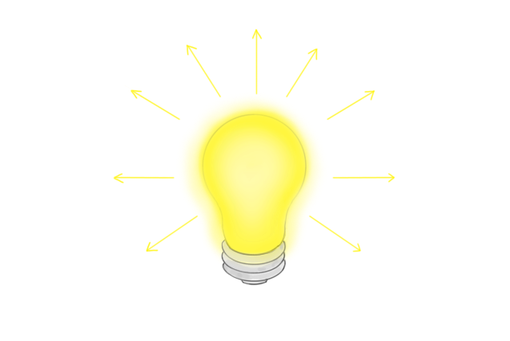
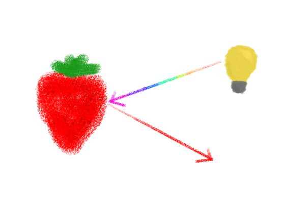

Com certeza você já olhou para um cenário e imaginou a foto perfeita, mas ao tentar clicá-la não conseguiu o resultado que queria. Existem uma série de processos que ocorrem entre a sua decisão de tirar a foto e a criação do arquivo.
Não pretendo trazer muitos conceitos de física para cá. A ideia é te ensinar a tirar fotos melhores, não te dar um susto! Porém, antes de começar qualquer conversa, precisamos resolver aqui o conceito de luz que vamos usar. Se você já está pensando pular essa parte, peço que dê uma chance. Tentei deixar o mais simples possível.
De modo simplificado, podemos estudar a luz como um raio que sai de um emissor (uma lâmpada, por exemplo) e segue pelo ambiente em linha reta. Os raios saem do emissor em todas as direções até encontrar um obstáculo.

Um raio de luz branca carrega com ele todas as cores. Quando um raio desses encontra um obstáculo, algumas dessas cores são absorvidas e o que restou é refletido como um raio de outra cor. Exemplo: um morango absorve todas as cores menos o vermelho, então reflete um raio de luz vermelho. Se esse raio chega no nosso olho, enxergamos "vermelho" na região do morango, e é isso que dá a impressão de cor.

Na verdade, tudo o que você enxerga é uma interpretação dos raios de luz de diversas cores que chegam no seu olho. No escuro, não temos uma fonte de luz, então não há raios no ambiente. Por isso não enxergamos nada.
Pronto, agora que alguns conceitos-chave já foram definidos, podemos começar a entender um panorama geral dos processos que geram uma fotografia. Vou simplificar aqui em uma lista:
Nas aulas seguintes vamos ver em detalhe cada um desses processos e aprender a controlar esses raios de luz para gerar a fotografia desejada.